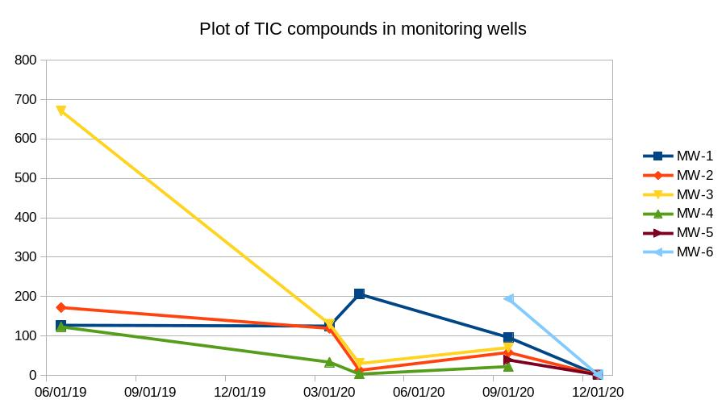

DeeAar Holdings, LLC
A real-estate hedge fund with sustainability in mind.
- @dinkarganti, CEO and Developer
- Website
Copyright: DeeAar Holdings LLC, 2022. All rights reserved.
Who We Are
- We are a real-estate investment fund focusing on deriving value from environmentally challenged sites.
Our Definition of an Environmentally Challenged Site
- Sites that are strategically located and most likely on their way to becoming brownfields, such as,
- Abandoned gas stations,
- , Dry-cleaning operations (current or historical) in shopping malls
- , and Automotive centers, etc.
Value Proposition
- We are a brownfields real-estate redeveloper.
- We specialize in releasing the value these brownfields by
- Keeping the cleanup costs low
- Completing the cleanup in about 40% of the projected time estimates.
Our track record
- Cleanup of an abandoned gas station in Mays Landing, NJ.
- Site in York, PA.
- A mini-shopping mall in York,PA.
Cleanup of an abandoned gas station - Mays Landing, NJ
- The site was formerly utilized as an automotive service with
- Gasoline,
- and Kerosene fuel pumps.
Mays Landing, NJ (contd.)
- Areas of concern
- Unleaded gasoline underground storage tank (UST)
- 2 X 8000 gallons tank - Tank-1, Tank-2.
- Leaded gasoline UST
- 2 X 3000 gallon Tank-3 and Tank-6.
- 2000 gallon Tank-4.
- Unleaded gasoline underground storage tank (UST)
Mays Landing, NJ (contd.)
- Areas of concern
- Kerosene UST
- 1000 gallon - Tank-5.
- 2 dispensers and appertenance piping.
- Kerosene UST
Project - Image gallery


Timeline - Mays Landing, NJ (contd.)
- Site was last operational in 1989 and vacated since then.
- Areas of concern (the underground storage tanks) were removed on August 3rd, 2018.
- An in situ remedial strategy for groundwater was proposed in Mar 2020.
- Cleanup was complete in Jan 2022.
Results in Monitoring Wells (MW) - Mays Landing, NJ (contd.)
| Date | Well Location | Concentration | Time to achieve 50% decay |
|---|---|---|---|
| 3/13/2020 | MW-3 | 130 ppb | - |
| 4/27/2020 | MW-3 | 29.9 ppb | 20 days |
Note: Assuming that the decay is exponential.
Notes on the rate of bioremediation at site - Mays Landing, NJ (contd.)
- Location: MW-3.
- Date 3/13/2020: 130.
- Date 4/27/2020: 29.9.
- Duration: 45 days.
- 50 % decay: 20 days.
Conclusions - Mays Landing,NJ (contd.)
- HydroRemed was successful in cleaning up the site under 6 months.
- The project was completed within 3 years and under budget.
- The site is not listed as a priority by the NJDEP.
- A blog post on the project unrestricted use. Link.
- Response Action Outcome (RAO) for unrestricted use. Link.
- The Remedial Investigation Remedial Action Report. Link.
Strategy
- Scout for a property with potentials after remediation.
- Pre-acquisition checks:
- Ensure that the DEP (or its equivalent) approves of our protocol.
- Appoint a remediation professional for the project.
- Identify a potential buyer.
- Acquire the property.
- Cleanup the property within 12 -24 months.
- Return the property back to the market in the event the potential buyer identified earlier decides to pass.
Challenges
- Cleanup can take longer than anticipated.
- Increasing the acquisition cost.
- Cleanup costs could involve traditional methods that add into the costs.
Active Projects
| Address | 6380 Blackhorse Pike, Mays Landing | 74 N. Main St., Antrim, NH | 601 N. York, Pa |
|---|---|---|---|
| Cleanup Status | RAO Unrestricted use | Active Remediation | Remediation done |
| Summary | Gas station abandoned since 1989 | A former retail gasoline fueling facility | A commercial site with USTs |
Team
- Dinkar Ganti, Developer and CEO
- Gnanu Ayysola, Co-founder
- Marc Lucier - Sr. Corporate Counsel
Summary
Our portfolio consists of properties that were on the priorities list of the local environmental agencies which have later been removed from that list as a result of the successful cleanup. We believe that this cleanup is needed for sustainability.